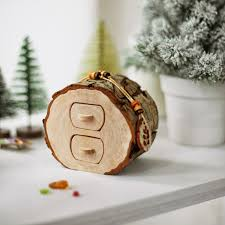
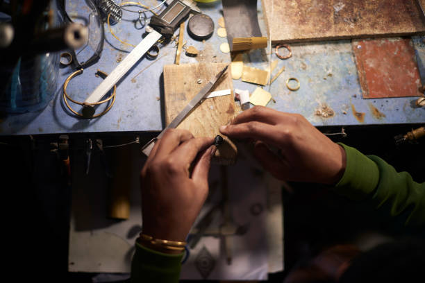

About Harriet Boone
Harriet Boone is an artisan based in Adelaide, renowned for her handcrafted wooden wearables. Transitioning from a passionate hobbyist to a professional, she combines traditional techniques with modern design sensibilities.
Her creations are inspired by the natural beauty of Australia and the art of woodworking. Every piece reflects her commitment to quality, sustainability, and artistic expression.